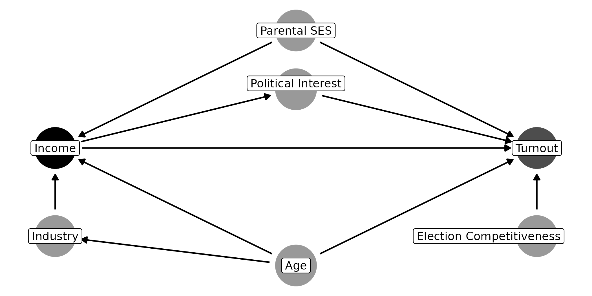
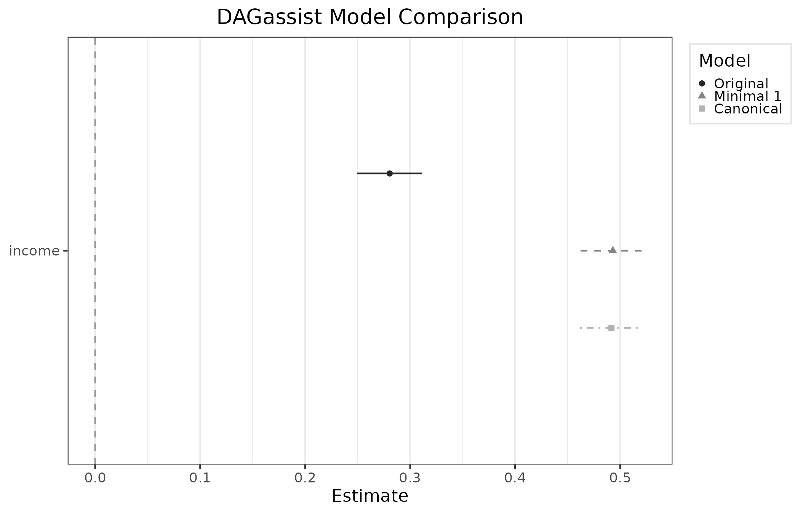

Get started with DAGassist
Graham Goff and Michael Denly
Source:vignettes/DAGassist.Rmd
DAGassist.RmdDAGassist checks your regression against your causal
diagram. It infers which controls identify the estimand of interst,
re-fits the model with the controls the diagram implies, and reports the
comparison. This guide walks through the workflow in five steps:
- Declare the effect you want to estimate.
- Draw a DAG of how you think the data were generated.
- Classify each control by its causal role.
- Re-estimate the model with DAG-derived adjustment sets.
- Target your estimand explicitly.
The running example asks whether higher income increases voter
turnout. The data, turnout_data, are simulated, so the
right answers are known.
Step 1: Declare your estimand
Before choosing controls, decide which effect you want (Lundberg et al. 2021). Income could affect turnout in two ways: directly, and by raising political interest, which in turn raises turnout. That gives two different questions:
-
The total effect. How much does turnout change when
income rises, through every path? In
turnout_data, the answer is 0.50. - The direct effect. How much does turnout change when income rises but political interest is held fixed? The answer is 0.30.
The choice matters because the same control can be required for one question and inadmissable for the other. This guide targets the total effect.
Step 2: Draw your DAG
A directed acyclic graph (DAG) encodes your assumptions about how the data were generated. Each edge (arrow) is a direct causal effect; each missing edge is an assumption that there is none. For introductions to DAGs, see Pearl (2009), Elwert (2013), and Hünermund et al. (2025).
The easiest way to write a DAG in R is ggdag::dagify(),
which uses formula syntax: each line lists a variable and its direct
causes. Note that DAGassist requires that node names must
match the column names in your data.
dag <- ggdag::dagify(
turnout ~ income + age + parental_ses + polint + elect_comp,
income ~ age + parental_ses + industry,
polint ~ income,
industry ~ age,
exposure = "income",
outcome = "turnout"
)Alternatively, you can also draw the DAG in the DAGitty web tool and paste its code into
dagitty::dagitty().

In our example, age and parental_ses affect both income and turnout. Political interest carries part of income’s effect to turnout. Industry affects income only, and election competitiveness affects turnout only.
Step 3: Classify your controls
Now take the regression you would have run. A common instinct is to
control for everything available. Pass the DAG and that regression to
DAGassist(). The regression is written as the full model
call, so DAGassist() can re-fit it with other controls.
DAGassist(dag,
lm(turnout ~ income + parental_ses + age + polint + industry + elect_comp,
data = turnout_data),
show = "roles")
#> DAGassist Report:
#>
#> Roles:
#> variable role Exp. Out. conf med col dOut dMed dCol dConfOn dConfOff NCT NCO
#> income exposure x
#> turnout outcome x
#> age confounder x
#> parental_ses confounder x
#> polint mediator x
#> elect_comp nco x
#> industry nct x x
#>
#> (!) Bad controls in your formula: {polint}
#>
#> Roles legend: Exp. = exposure/treatment; Out. = outcome; CON = confounder; MED = mediator; COL =
#> collider; dOut = descendant of outcome; dMed = descendant of mediator; dCol = descendant of
#> collider; dConfOn = descendant of a confounder on a back-door path; dConfOff = descendant of a
#> confounder off a back-door path; NCT = neutral control on treatment; NCO = neutral control on
#> outcomeClassifying roles needs only the DAG and the formula, not the data. For the total effect:
-
ageandparental_sesare confounders. They must be controlled for. -
polintis a mediator and a bad control. Controlling for it removes the part of income’s effect that runs through political interest. -
industryaffects only income, andelect_compaffects only turnout. Both are neutral controls: safe to include, but not required.
Causal
roles and adjustment sets defines every role DAGassist
can assign.
Step 4: Re-estimate with DAG-derived adjustment sets
With show = "models", DAGassist() also
re-fits the model with two adjustment sets derived from the DAG. The
minimal set contains only the controls needed to block
every back-door path. The canonical set also adds every
safe control.
DAGassist(dag,
lm(turnout ~ income + parental_ses + age + polint + industry + elect_comp,
data = turnout_data),
show = "models", type = "text", verbose = FALSE)| Term | Original | Minimal 1 | Canonical |
|---|---|---|---|
| income | 0.281*** | 0.493*** | 0.492*** |
| (0.016) | (0.016) | (0.015) | |
| parental_ses | 0.331*** | 0.324*** | 0.332*** |
| (0.017) | (0.019) | (0.018) | |
| age | 0.275*** | 0.273*** | 0.267*** |
| (0.017) | (0.020) | (0.019) | |
| polint | 0.420*** | ||
| (0.014) | |||
| industry | -0.017 | -0.010 | |
| (0.015) | (0.016) | ||
| elect_comp | 0.500*** | 0.506*** | |
| (0.014) | (0.015) | ||
| Num.Obs. | 5000 | 5000 | 5000 |
| R2 | 0.596 | 0.423 | 0.525 |
- p-value legend: + < 0.1, * < 0.05, ** < 0.01, *** < 0.001.
- Controls (minimal): {age, parental_ses}.
- Controls (canonical): {age, elect_comp, industry, parental_ses}.
Both DAG-derived models estimate income’s effect at 0.49, close to the true total effect of 0.50. The original regression returns 0.28; by controlling for the mediator, the original model estimates something close to the direct effect (0.30). In the console, the full report also includes balance diagnostics, which flag when missing data leave the models with different samples.
To see the comparison as a plot, set
type = "dotwhisker":
DAGassist(dag,
lm(turnout ~ income + parental_ses + age + polint + industry + elect_comp,
data = turnout_data),
type = "dotwhisker")
Step 5: Target your estimand explicitly
The DAG-derived regressions recover the total effect here because the
model is linear and has no interactions. The estimand
argument targets an effect directly, whatever the model:
-
estimand = "total"adds inverse-probability-weighted estimates of the average total effect. -
estimand = "direct"adds sequential g-estimates of the average controlled direct effect.
DAGassist(dag,
lm(turnout ~ income + parental_ses + age + polint + industry + elect_comp,
data = turnout_data),
estimand = c("total", "direct"),
show = "models", type = "text", verbose = FALSE)| Term | Original | Total Minimal 1 (Raw) | Total Canonical (Raw) | Total Minimal 1 (Weighted) | Total Canonical (Weighted) | Direct (Raw) | Direct (Weighted) |
|---|---|---|---|---|---|---|---|
| income | 0.281*** | 0.493*** | 0.492*** | 0.495*** | 0.493*** | 0.281*** | 0.280*** |
| (0.016) | (0.016) | (0.015) | (0.025) | (0.029) | (0.014) | (0.027) | |
| parental_ses | 0.331*** | 0.324*** | 0.332*** | 0.331*** | 0.343*** | ||
| (0.017) | (0.019) | (0.018) | (0.017) | (0.031) | |||
| age | 0.275*** | 0.273*** | 0.267*** | 0.275*** | 0.272*** | ||
| (0.017) | (0.020) | (0.019) | (0.017) | (0.028) | |||
| polint | 0.420*** | ||||||
| (0.014) | |||||||
| industry | -0.017 | -0.010 | -0.017 | -0.014 | |||
| (0.015) | (0.016) | (0.015) | (0.024) | ||||
| elect_comp | 0.500*** | 0.506*** | 0.500*** | 0.476*** | |||
| (0.014) | (0.015) | (0.014) | (0.025) | ||||
| Num.Obs. | 5000 | 5000 | 5000 | 5000 | 5000 | 5000 | 5000 |
| R2 | 0.596 | 0.423 | 0.525 | 0.339 | 0.441 |
- p-value legend: + < 0.1, * < 0.05, ** < 0.01, *** < 0.001.
- Controls (minimal): {age, parental_ses}.
- Controls (canonical): {age, elect_comp, industry, parental_ses}.
The weighted total-effect estimates (0.49–0.50) agree with the regression estimates, and the direct-effect estimates (0.28) are close to the true direct effect of 0.30. Each number now corresponds to an explict estimand. Total and direct effects explains how each column is estimated, how to read the weight diagnostics, and what each estimand assumes.
Next steps
Every conclusion above assumes the DAG is correct. Thus, it is
important that you use DAGassist’s uncertainty tests to see
if model results are sensitive to uncertainty in the DAG. For example,
what if political interest raises income, rather than the reverse?
pdag_robustness(dag,
formula = turnout ~ income + parental_ses + age + polint + industry + elect_comp,
uncertain_edges = "income -- polint")
#>
#> PDAG robustness summary:
#> - uncertain edges specified: 1
#> - worlds evaluated (acyclic orientations): 2
#> - minimal adjustment set changed: yes
#> - canonical adjustment set changed: yes
#> - covariate role changed: mediator -> ambiguous (confounder / mediator) for polint (good/bad control flip)
#> - re-estimation recommended: yesIf that edge is reversed, political interest becomes a confounder, changing the adjustment set and estimates. Robustness to DAG uncertainty explains uncertainty testing in greater detail.
Further documentation and tutorials:
- Causal roles and adjustment sets covers every role and both adjustment sets.
- Total and direct effects covers estimand recovery and its assumptions.
- Robustness to DAG uncertainty tests uncertain and missing arrows.
- Exporting reports writes the report to LaTeX, Word, Excel, plain text, or a plot.
-
Supported
model engines lists the estimators
DAGassistworks with beyondlm().